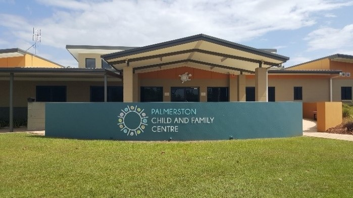

The Gray Family Centre

The Focus of the Gray Family Centre
- To assist parents, carers and families to support their childrens educational needs.
- To provide a safe environment for parents to understand and access the school and its related services
- To provide a range of social and educational events as requested by the school community
To Achieve this, we aim:
- To work with parents and carers, students and teachers to improve educational outcomes
- To maintain open and honest communication with parents and carers, teachers, students and community members to identify factors affecting student outcomes
- To encourage, advise and support parents and carers to work closely with their child’s teacher and other school staff
- To encourage and support parents and carers to participate in school events and School Council activities
- To inform parents and carers of services in the Palmerston and surrounding areas that are available to them
- To organise a range of events at suitable times to provide parents and carers with social and educational opportunities.